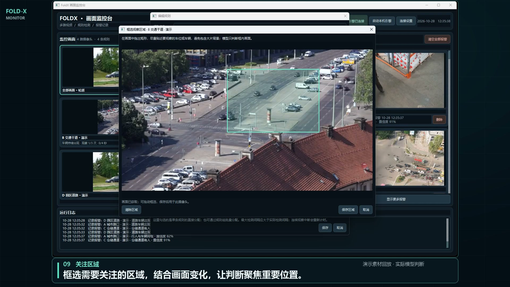
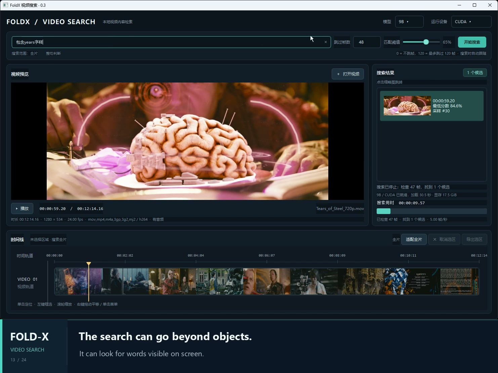

CASE 05 / Connecting language to visual content
Describe what you want to find.
Describe an object, an activity, or a combination of conditions in natural language. Fold-X evaluates whether a scene matches. The monitoring application records matching frames, while video search returns candidate thumbnails and timestamps for review.
The focus shifts to visual understanding: connecting a goal expressed in words with specific content in an image or video.
Where this can help · Relevant to event screening, video content search, and capturing frames that meet user-defined conditions.
What the recording shows
- The demos include combined conditions, regions of interest, match records, and navigation to video timestamps.
- The monitoring demo replays sample footage. Match scores are not accuracy measured against labeled ground truth.
These recordings demonstrate the workflow. They do not include a complete accuracy evaluation or reproducible per-decision latency measurements.
Reading the speed claims · Project materials describe the frame-level judgment step as taking milliseconds. That claim has not been independently verified here and is not a promise of millisecond full-video search or cloud API latency.
Key frames





Both public edits retain the original sequence and audio of the included scenes. Technical explanation segments have been removed.
Music: “Universal” by Kevin MacLeod, incompetech.com, CC BY 4.0; includes duration, volume, and excerpt edits. Sample film: “Tears of Steel” by Blender Foundation, mango.blender.org, CC BY 3.0; includes video excerpts and screenshots. The monitoring credits identify replayed Pexels footage.